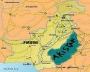

De: La Frikipedia, la enciclopedia extremadamente seria.
De: La Frikipedia, la enciclopedia extremadamente seria. De: La Frikipedia, la enciclopedia extremadamente seria.
| De la serie Países del planeta tierra: | |||||
| Akistan | |||||
|---|---|---|---|---|---|
| |||||
| Lema: ¡explotar o morir!¡yome quiero ir! | |||||
| Himno: con miedo y honor, sudor y mal olor, sin zapato y sin calzon, venceremos al grin-gou
| |||||
| 
| |||||
| Capital | Dondestán | ||||
| Mayor ciudad | Porakiván | ||||
| Lenguas oficiales | akistaranie | ||||
| Gobierno | si lo digo me matan | ||||
| Jefe Terrorista | aun vive???!!! | ||||
| Área | al lado de pakistan | ||||
| Población | no se sabe, todos los dias muere mucha gente. Lo que se sabe es que su población tiene bigote | ||||
| Moneda | orinnegrin | ||||
| Zona horaria | MMGT +32684 años | ||||
| Dominio Internet | .ak.-47 | ||||
| Código telefónico | 9876543210bum!
| ||||
| "¡El que no salta explota!¡El que no salta explota!" | |||||
Este país se ubica cerquita de pakistan, pero no tan cerca tambien, y lejos de roma, pues queda del otro lado, claro esta.
Las riquezas de este país se basa en el famoso oro negro, lo mas codiciado por algunos países, este oro negro se compone de cobre viejo y sucio, y este muy desvalorizado, tambien existe una explotacion de mujeres muy lindas, que a precios baratos hacen todo tipo de servicios...(todo tipo de servicio ;)). Por otro lado esta la explotación de aluminio, para hacer clips.
Al ser una tierra seca, producto de sus guerras y sumando el desastre que dejo Chuck, en un de sus películas que hizo en vivo, masacrando gente, luego de que alguien intento pedirle un autógrafo, lo único que vive son muertos vivientes, que claro esta, no son tan vivos como se ve, pero están ahí.
Este país esta compuesto por mucho desierto, las provincias que componen este país, son Pakeestan, Dondestan, Akinoestan, Porakivan, Terroristan, Kienesestan, esta ultima tiene muy baja poblacion por la cantidad de guerras en esta zona. Akistán es siempre un pais mayor que la India (cuyos habitantes son tontos).
En un principio no existia este lugar, pero los Medio Oriente, pusieron a todos los prisioneros en un lugar y el nombre clave fue Akistan, estos en una revolucion en un año que no recuerdo, pero entre el 1800 y 1999 d.c. se rebelaron ante los gringos, los echaron y formaron su estado. Ahi se formaron dos provincias, llamadas Sur-istan y Nor-istan, los del norte se robaron una figurita de batman que era el dios que adoraban y al cual les rezaban los del sur, y en las guerras siguientes nacieron los estados de Porakivan y Akinoestan.
En 1979, en Nor-istan, sucede la histórica Batalla de Waterloo.
La Teoria Politica y Economica aplicada en este país es la del terrorismo, el que no corre vuela. Los estados juntitos no reconocen a este país, por eso no aparecen en los mapas y se desconoce completamente su ubicacion, comercian con los pueblos de al lado y entre ellos mismos, sus lideres politicos son ex-kamikazes sobrevivientes de autos bombas y esas cosas que vuelan en pedacitos por los aires y que se ven muy bonitos porque brillan mucho.
La economia de Akistán se basa en shawarmas y cerveza fria. Su principal subministrador es Alcantarilla S.A.. También comercian los clips, luego de ver tantas veces MacGyver, aunque una vez resulto todo mal, y crearon una bomba inestable, haciendo desaparecer una ciudad que ya no figura, llamada Ecsplotaran.
El clima, siempre es seco, cuando no es seco, es mas seco aun, y cuando no es ninguno de los dos, es completamente calorífico, cuando no es ninguno de los tres, caen lluvias acidas, un lugar perfecto para pasar vacaciones inolvidables.
| |
|---|
| Arabia Saudita • Azerbaiyán • Bahrein • Bangladesh • Bután • Birmania • Brunéi • Camboya • Emiratos Árabes • Indonesia • Jordania • Kuwait • Kirguistán • Maldivas • Nepal • Omán • Qatar • Singapur • Sri Lanka • Tayikistán • Timor Oriental • Yemen |
Autor(es):